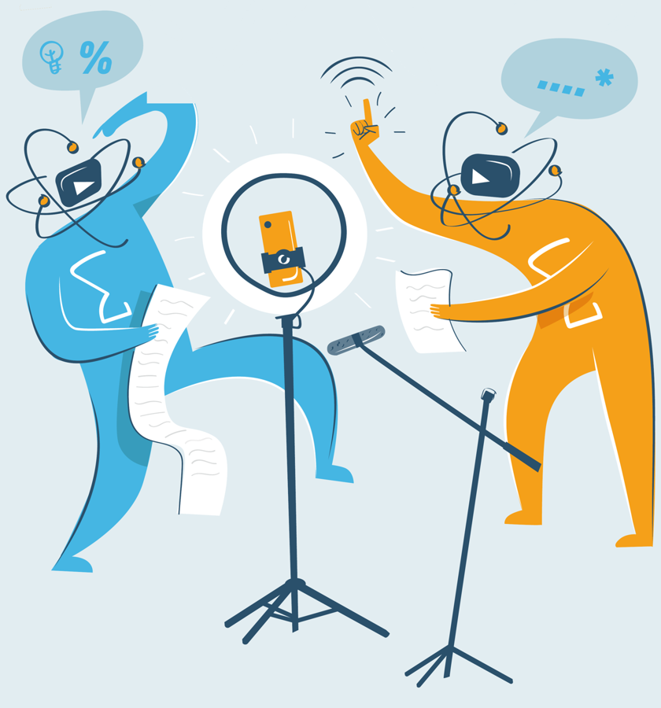

Bases de participación
Teleco
muní
cate!
Ven al hall de la ETSIT, grábate o hazte una foto delante del cartel y cuéntale algo a toda la escuela. Pueden participar alumnos y profesores.

¿Qué puedes contar?
Una anécdota
Algo que te pasó en la escuela.
Un mensaje
Para alguien de la escuela.
Una declaración
De amor, de amistad o a una asignatura.
Un «gracias»
A quien te haya ayudado.
¿No se te ocurre nada? Cada semana propondremos un tema en nuestras redes.
¿Cómo participar?
- 1
Ponte frente al cartel
Está en el hall de la ETSIT. Que se vea detrás de ti.
- 2
Móvil en el aro de luz
Colócalo en el soporte y encuádrate con el cartel detrás.
- 3
Grábate o hazte una foto
Un vídeo de 30 segundos como máximo o una foto. Repítelo las veces que quieras.
- 4
Envíanoslo
Por mensaje directo al Instagram de la ETSIT: @telecoupv.
Requisitos
Tu propio móvil
La escuela pone el aro de luz; el móvil lo pones tú.
Máximo por vídeo
Los vídeos más largos no se publicarán. Las fotos también valen.
Solo o en grupo
Todas las personas que salgan deben estar de acuerdo.
Sin insultos
Ni palabrotas ni nada ofensivo, o no lo podremos subir.
Qué vale y qué no
Sí
- Humor y buen rollo
- Mensajes a alguien sin dejarle en evidencia
- Hablar de asignaturas, profes o la cafetería con respeto
- Castellano, valenciano o inglés
No
- Insultos o palabrotas
- Burlarse de alguien o señalarle
- Datos personales de otros: teléfonos, cuentas, direcciones
- Grabar o fotografiar a alguien sin su permiso
- Publicidad o música de fondo
Qué pasa después
Lo revisamos
Vemos todos los vídeos y fotos antes de publicar nada.
Lo subimos a stories
Si cumple las normas, lo publicamos en las historias de Instagram y TikTok de la ETSIT.
Puedes echarte atrás
Si cambias de idea, escríbenos y lo retiramos.
Tu imagen
Al enviarnos tu vídeo o tu foto, aceptas que la ETSIT lo publique en sus redes sociales. Si sale más gente contigo, asegúrate de que todos están de acuerdo antes de enviarlo.
Dudas rápidas
¿Puedo grabarme fuera del hall?
No. Tiene que verse el cartel de Telecomunícate detrás de ti.
¿Puedo enviar más de un vídeo o foto?
Sí, envía todos los que quieras.
¿Tengo que decir mi nombre?
No hace falta. Tú decides si te presentas o no.
¿Cuánto tarda en publicarse?
Depende de cuántos vídeos recibamos. Revisamos lo que nos llega cada semana.